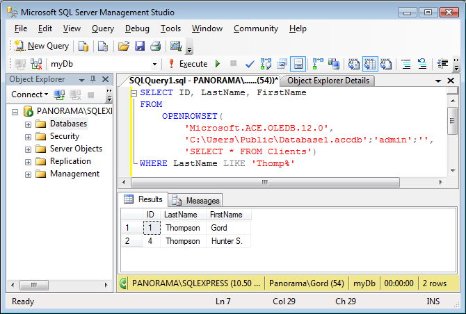

|
pio777 |
|
Попробуйте: sp_configure 'show advanced options',1 reconfigure with override go
|
После этого заработало всё: OPENDATASOURCE и linkedserver.
И про OPENQUERY тоже совет был полезный - касательно прав дступа.
привожу полный листинг того, что сделал что бы заработало:
-- Подключаем EXCEL
----------------------------------------
-- Вариант 1 через Прилинкованный сервер
----------------------------------------
-- 1 проверяем версию
select @@Version
-- 2 Проверяем зарегистированные драйверы, для x64 должен быть "Microsoft.ACE.OLEDB.12.0"
EXEC sp_enum_oledb_providers
-- 3 Разрешаем работу драйвера (если они зарегистированы)
EXEC master.dbo.sp_MSset_oledb_prop N'Microsoft.ACE.OLEDB.12.0', N'AllowInProcess', 0
EXEC master.dbo.sp_MSset_oledb_prop N'Microsoft.ACE.OLEDB.12.0', N'DynamicParameters', 0
-- 4. включаем xp_cmdshell для работы с файлами
begin
EXEC sp_configure 'xp_cmdshell',1
reconfigure with override;
end
-- 4.1 'Ad Hoc Distributed Queries' включаем распределенные нерегламентированные запросы
begin
EXEC sp_configure 'Ad Hoc Distributed Queries',1
reconfigure with override;
end
-- 4.2 включаем 'show advanced options'
begin
EXEC sp_configure 'show advanced options',1
reconfigure with override
end
-- 4.3 'sp_addlinkedsrvlogin - FALSE' пароли для подключения к связанному серверу не используются
begin
EXEC
exec sp_addlinkedsrvlogin N'LS_EXCEL', 'False'
end
-- 5. создаём прилинкованный сервер
EXEC master.dbo.sp_addlinkedserver
@server = N'LS_EXCEL',
@srvproduct=N'ms ace 12',
@provider=N'Microsoft.ACE.OLEDB.12.0',
@datasrc=N'c:\data\MySheet3.xls',
@provstr=N'Excel 12.0;'
-- 6. В свойствах Linked Server в графе безопасность ставим "Устанавливать без контекста безопасности"
-- 7. Проверяем через Management Studio->Server Objects->Linked Server->Test Connection есть ли связь с созданным сервером.
-- 8. Проверяем доступность файла
exec master..xp_cmdshell 'dir c:\data\MySheet3.xls'
-- 9. Пробуем считать файлы
SELECT * FROM [LS_EXCEL]...[Range]
или
SELECT * FROM [LS_EXCEL]...[Range$]
----------------------------------------
----------------------------------------
-- Вариант 2 через OPENDATASOURCE
----------------------------------------
select*
FROM OPENDATASOURCE('Microsoft.ACE.OLEDB.12.0',
'Data Source=c:\data\MySheet3.xls;Extended Properties=EXCEL 12.0')...[Range$];
или
select*
FROM OPENDATASOURCE('Microsoft.ACE.OLEDB.12.0',
'Data Source=c:\data\MySheet3.xls;Extended Properties=EXCEL 12.0')...[Range] ;
----------------------------------------
Так же опобликую здесь (что было потом где искать) чтение и запись в файл:
-- Пример чтения и записи в файл
-- Чтение из файла
-- https://www.sql.ru/forum/actualthread.aspx?tid=971400&hl=dbf
-- Вариант № 1.
select * FROM OpenDataSource('Microsoft.ACE.OLEDB.12.0','Data Source=c:\SEND_MAIL_RZD\;Extended Properties="text;HDR=No;FMT=Delimited"')...[kont2013-03-05#txt]
select * FROM OpenDataSource('Microsoft.ACE.OLEDB.12.0','Data Source=c:\SEND_MAIL_RZD\;Extended Properties="text;HDR=No;FMT=Delimited"')...[vagotv#txt]
-- где
-- Microsoft.ACE.OLEDB.12.0 - драйвер
-- Data Source=c:\SEND_MAIL_RZD\;Extended Properties="text;HDR=No;FMT=Delimited" -- строка инициализации
-- kont2013-03-05#txt -- файл.
-- Вариант № 2
-- http://msdn.microsoft.com/ru-ru/library/ms190312(v=sql.105).aspx
SELECT a.* FROM OPENROWSET( BULK N'c:\SEND_MAIL_RZD\values.txt', FORMATFILE = 'c:\SEND_MAIL_RZD\values.fmt') AS a;
SELECT * FROM OPENROWSET(BULK 'c:\SEND_MAIL_RZD\values.txt', ) AS x
-- Вариант № 2 BULK INSERT -- см справку по BULK INSERT
BULK INSERT AdventureWorks2008R2.Sales.SalesOrderDetail -- таблица должна существовать
select *
FROM 'С:\SEND_MAIL_RZD\kont2013-03-05.txt'
WITH
(
FIELDTERMINATOR =' |', -- признак конца столбца (если есть)
ROWTERMINATOR =' |\n' -- признак конца строки
)
-- Запись в файл
DECLARE -- объявление переменных
@cmd_v varchar (1024) -- строка для команды
SET @cmd_v = 'bcp "SELECT ftransport_namber FROM VSTO2EXP.dbo.vw_TransportUnitMonitor where TUMDisabled_code = 0 AND TUMUnitType = ''V''" queryout C:\SEND_MAIL_RZD\vag.txt -c -C1251 -T'
exec xp_cmdshell @cmd_v